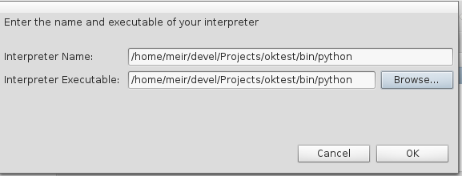
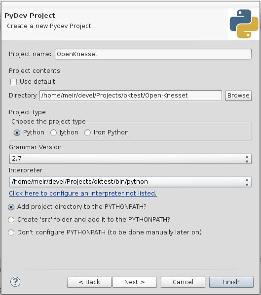
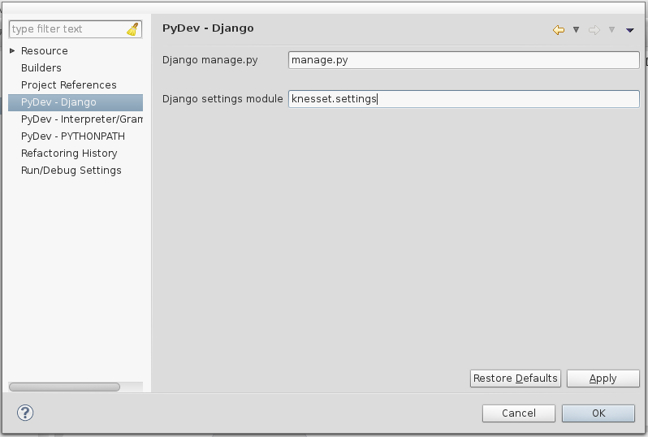

Basically you should lookup for virtualenv configuration of your preferred development environment.
Start by creating a new PyDev Project.
Warning
Don’t create a Django project! It’ll overwrite manage.py and create other files. We’ll convert it to a Django project later.
Click “Next” and type a name for the project — e,g OpenKnesset.
Uncheck “Use default” if checked, click “Browse”, navigate to the virtualenv and selected the previously cloned “Open-Knesset” directory.
Click the link named “Click here to configure an interpreter not listed”.
In the opened window, click “New”, and in the opened window “browse”. Navigate to your virtualenv and select the python executable in your Scripts folder (for MS Windows) or bin (on Linux).
Click “OK”. A window will popup with folders to be added to python path, click “OK”. If you get a warning click “Proceed anyways”. Let it process the libraries and click “OK”.
Now you’re back in the Project’s dialog. Select the interpreter you’ve just added.
Make sure “Add project directory to the PYTHONPATH” is selected.
You should have something like:
Click “Finish”, and switch to the PyDev perspective (if the dialog appears).
Now you should have the project in the PyDev Package explorer (left side). In the project. Right click it and select “PyDev” | “Set as Django project”.
Right click the project and select “Properties”.
Select “PyDev - Django”, and enter manage.py int “Django manage.py” and knesset.settings in “Django settings module”.
Click “OK”.
Create a run configuration for your project (to make sure it’ll find the database, etc.):
You can use some variation on these functions when beginning a development session (only after you finished the initial setup). To use these, paste these functions into your ~/.bashrc file and change the ~/oknesset/ in oknesset_activate to the directory where you installed the project’s virtualencv. These functions will now be available to you in all future bash sessions, but to get it working in already opened tabs, you’ll need to type source ~/.bashrc.
A possible session might include:
oknesset_activate () { #Just enter the Open-Knesset directory and activate the virtualenv
cd ~/oknesset/ #or wherever you put it
source bin/activate
cd Open-Knesset
}
oknesset_update () { #Pull the new code and prepare the environment
oknesset_activate
DB_URL="http://oknesset-devdb.s3.amazonaws.com/dev.db.bz2"
if wget --timestamping $DB_URL | grep Saving # new version downloaded
then
mv dev.db dev.db.old
bzip2 -kd `basename $DB_URL`
fi
git pull git@github.com:hasadna/Open-Knesset.git master
cd ..
pip install -r Open-Knesset/requirements.txt
cd Open-Knesset
./manage.py migrate
./manage.py test
}
oknesset_runserver () { #start the local server
oknesset_activate
./manage.py runserver
}
oknesset_makedocs () { #make the documentation html
oknesset_activate
pushd docs/devel >/dev/null
make html
popd >/dev/null
}
During debugging, you can use the Python debugger, pdb.
Add import pbd in the code, and pdb.set_trace() in the line you want to begin debugging from.
Run the server and browse the site as usual. When the code hit the line you set a trace in, the browser will hang, and you will get the pdb shell back:
> /home/yourname/workspace/oknesset/Open-Knesset/agendas/models.py(448)get_mks_values()
-> summaries_for_ranges = []
(Pdb)
You can run any python code from there, just like a normal python interpreter, in addition to control commands, like c to continue execution, and n to step single line.
Warning
The debugger will not work in python manage.py, since the output is blocked. The tests will just hang.
Important
Remember to remove any set_trace() commands from the code before committing.
You may want to add this too to local_settings.py, in order to speed up the testing by 25%-30%:
import sys
if 'test' in sys.argv:
PASSWORD_HASHERS = (
'django.contrib.auth.hashers.MD5PasswordHasher',
)
if you want the test suite to fail as soon as the first test does, add --failfast flag:
python manage.py test --failfast
In Ubuntu, you can add an alert after this command:
python manage.py test --failfast; alert
This will pop up a notification when the test is finished.